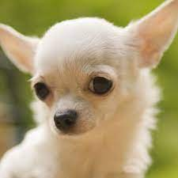

Porquê voce deveria ter um Chihuahua
Considerado um dos menores cães do mundo, o chihuahua só não tem tamanho: seu jeito atrevido e brincalhão faz com que os pais humanos desta raça sejam realmente apaixonados por seus pequenos filhotes< Se engana quem acha que, por seu pequeno porte, ele é do tipo medroso. Ao contrário disso, o cachorro chihuahua tende a ser destemido e cheio de coragem, se mostrando valente até para pets que têm muito mais tamanho do que ele.

É praticamente impossível passar por um cachorro Chihuahua e não notar sua presença. E não falamos isso por ser uma raça de grande porte — muito pelo contrário. Esse cãozinho tão especial é bem pequenino, mas chama a atenção pelo seu forte latido e pela sua estrutura corporal, extremamente delicada.
Quem pensa que por ser pequeno o Chihuahua é um cãozinho calmo e inofensivo, está bastante enganado. A raça é considerada uma das mais antigas, corajosas e leais aos seus tutores. No entanto, ele não é de muitos amigos e pode não se dar muito bem com estranhos, principalmente, com as crianças.

Agora veja o que a wikipedia fala sobre os chihuahuas